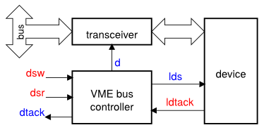
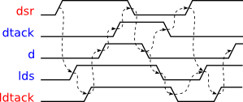
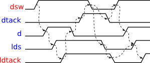
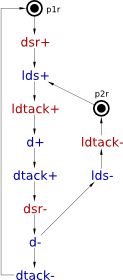
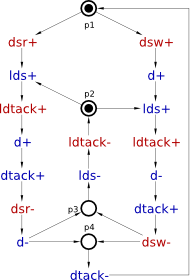
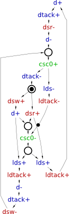
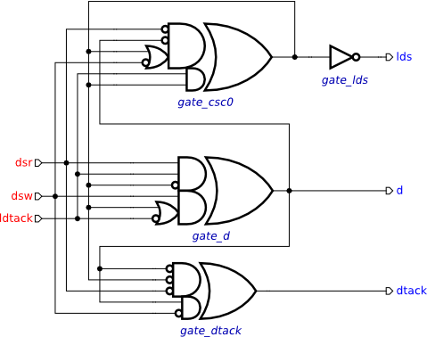

Table of Contents
Synthesis and verification of VME bus controller
A controller for VME bus provides an interface between a data bus and a slave device, as shown in the following diagram. 
The controller has two modes of operation: reading from the device into the bus (activated by dsr+) and writing from the bus into the device (activated by dsw+).
In the reading mode, a request to read data form the device is made through lds+. When the device has the data ready and this is acknowledged by ldtack+, the controller opens the transceiver by d+ and notifies the bus that data is ready for transfer by dtack+. After the read operation is complete, all the signals return to the initial state.
In the writing mode, once the data is stable on the bus, the transceiver is opened by d+, and the write request is made by lds+. When the device acknowledges the receipt of data by ldtack+, the transceiver is closed with d-, thus isolating the device from the bus, and the bus is notified that the write operation is complete by dtack+. After that all the signals return to the initial state.
These two modes of VME control are captured by the following timing diagrams.
|  |
| Timing diagram for the read mode |
|  |
| Timing diagram for the write mode |
Modelling
Model the read mode of VME controller with an STG. Create a new STG work called stg-vme-read and capture the sequence of events of the corresponding timing diagram.
Do the same for the write mode of VME bus control, in a separate STG work called stg-vme-write.
The result should be similar to the following STGs.
|  |
| STG for read operation |
 |
| STG for write operation |
The two STGs describe the behaviour of the same circuit and need to be combined into one specification by merging their initial states. Create a new STG work called stg-vme-read_write and copy-paste the STGs from stg-vme-read and stg-vme-write works into it. Create a marked place p1 that replaces the places p1r and p1w. Similarly, substitute the places p2r and p2w with a new marked place p2. The result should look as follows.
 |
| Combined STG for read and write scenarios |
Note that the place p2 is a controlled choice whose decision is determined by the free choice place p1.
Note the concurrency between the transitions resetting the device (lds- and ldtack-) and the new requests from the bus (dsr+ and dsw+): A new request can arrive while the device is still resetting, thereby allowing concurrent operation of the bus and the device. This concurrency is the “meaning of life” of VME bus controller.
Optional simplification
Once the initially marked places are merged, one can notice that transitions ldtack-, lds- and dtack- occur in both branches of the choice and can be merged. Here is the simplified STG.
|  |
| Simplified STG for read and write scenarios |
Validation and verification of the STG specification
Activate the simulation tool ![[M] Simulate](../../help/editor_tools-simulate.png "[M] Simulate") and exercise the obtained STG model to better understand the behaviour of VME bus controller. Click one of the enabled signal transitions (they are highlighted in orange) to fire it. Note that the sequence of fired transitions is recorded in the simulation trace that is somewhat similar to the original timing diagram. Check that the simulation traces correspond to the intended behaviour of VME bus controller.
and exercise the obtained STG model to better understand the behaviour of VME bus controller. Click one of the enabled signal transitions (they are highlighted in orange) to fire it. Note that the sequence of fired transitions is recorded in the simulation trace that is somewhat similar to the original timing diagram. Check that the simulation traces correspond to the intended behaviour of VME bus controller.
Verify the STG specification for the following properties using Verification menu:
- Deadlocks
- Consistency
- Output persistence
- Complete State Coding (CSC)
This STG does not have CSC, which means there are two reachable states that have the same value of all signals but enable different outputs. These states are said to be in CSC conflict. Specifications with CSC conflicts cannot be directly implemented as circuits. One way of resolving CSC conflicts is to insert new internal signals into the STG. These internal signals add memory into the circuit helping it to trace the current state.
Synthesis
Resolve the encoding conflict using Petrify via Tools→Encoding conflicts→Resolve CSC conflicts [Petrify] menu. Petrify will insert a new signal csc0 distinguishing between states that are in CSC conflict. The result could look like the following STG (note that the solution is not unique and you may get a slightly different STG):

The obtained STG specification has CSC and can now be synthesised into an asynchronous circuit implementation either with Petrify or MPSat backend tool. A complex gate solution obtained with Petrify is as follows (note that the solution is not unique and you may get slightly different equations):
[d] = dsr ldtack csc0' + dsw (csc0 + ldtack'); [dtack] = d' dsr' csc0' + d dsw'; [lds] = csc0'; [csc0] = dsr' d' (dsw' + csc0) + ldtack csc0;
Verification of the circuit implementation
Download the following complex-gate implementation of the VME bus controller circuit-vme-cg.work (4.99 KiB, 2M ago).

Assign the original STG describing the contract with the environment to the circuit model. This can be achieved as follows:
- In the circuit editor make sure that no components are selected (click on the editor canvas).
- In the property editor choose the Environment URI property and select the work file with the original STG specification.
Use the Verification menu to verify that the circuit implementation is:
- deadlock-free;
- hazard-free;
- conforms to the original STG specification.
Optional
Decompose one of the complex gates by splitting it into simple gates and verify the circuit for hazards. If a hazard is reported (most likely it will be), then play back the trace leading to the problematic state to better understand why the naive decomposition does not work.
Solutions
Download all the Workcraft models discussed in this section here:
VME bus controller models (27.74 KiB, 2M ago)